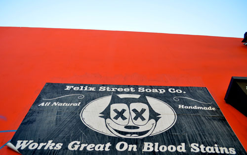
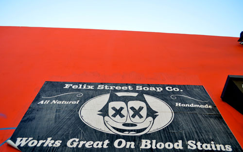

Felix the Cat

Felix the Cat uses wheatpasting with his signature cat with two x's in the eyes. This particular one was shot on the side of a building in Melrose, California.


Felix the Cat uses wheatpasting with his signature cat with two x's in the eyes. This particular one was shot on the side of a building in Melrose, California.